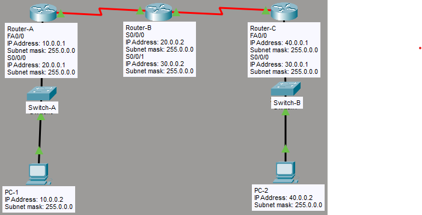

What I Learned
In this lab, I had two separate EIGRP autonomous systems — EIGRP 100 on the left side (Router-A) and EIGRP 200 on the right side (Router-C). The two sides couldn't talk to each other because they were in different AS numbers.
Router-B sits in the middle connected to both. By configuring redistribution on Router-B — importing EIGRP 200 routes into EIGRP 100 and vice versa — both sides could finally reach each other. The interesting part: Router-C could see Router-B's network but still couldn't see Router-A's network until redistribution was configured in both directions.
What is Redistribution?
Redistribution is the process of taking routes learned by one routing protocol (or AS) and injecting them into another. Without it, routers in different routing domains are completely isolated — they cannot see each other's networks even if they are physically connected.
Why Redistribution is Needed
- Two EIGRP processes with different AS numbers do not share routes automatically
- A boundary router connected to both domains must manually import routes from one into the other
- Redistribution must be configured in both directions for full two-way reachability
- The redistributed routes appear in the routing table with an AD of 170 (external EIGRP) instead of 90 (internal)
| Route Type | Administrative Distance | Routing Table Code |
|---|---|---|
| EIGRP Internal | 90 | D |
| EIGRP External (redistributed) | 170 | D EX |
redistribute eigrp 200 inside EIGRP 100, Router-A can reach Router-C's networks — but Router-C cannot reach Router-A's networks. You must redistribute in both directions.
My Lab Topology
Three routers connected in a line. Router-A (Trichy) runs EIGRP 100, Router-C (Chennai) runs EIGRP 200, and Router-B (Coimbatore) sits between them connected to both — making it the redistribution point.

| Device | Location | Interface | IP Address | EIGRP AS |
|---|---|---|---|---|
| Router-A | Trichy | FA0/0 | 10.0.0.1 /8 |
EIGRP 100 |
| Router-A | Trichy | S0/0/0 | 20.0.0.1 /8 |
|
| Router-B | Coimbatore | S0/0/0 | 20.0.0.2 /8 |
EIGRP 100 + 200 (Redistribution Point) |
| Router-B | Coimbatore | S0/0/1 | 30.0.0.2 /8 |
|
| Router-C | Chennai | S0/0/0 | 30.0.0.1 /8 |
EIGRP 200 |
| Router-C | Chennai | FA0 | 40.0.0.1 /8 |
|
| PC-1 | Trichy LAN | — | 10.0.0.2 /8 |
— |
| PC-2 | Chennai LAN | — | 40.0.0.2 /8 |
— |
Download my Packet Tracer lab:
Download Lab FileConfiguration
The first step is enabling each router's interfaces and configuring EIGRP for their respective autonomous systems. Router-A and Router-C are straightforward — they each belong to only one AS.
Router-A (Trichy) — EIGRP 100
enable
configure terminal
! Enable interfaces
interface fa0/0
ip address 10.0.0.1 255.0.0.0
no shutdown
exit
interface s0/0/0
ip address 20.0.0.1 255.0.0.0
no shutdown
exit
! Configure EIGRP AS 100
router eigrp 100
network 10.0.0.0
network 20.0.0.0
exitRouter-C (Chennai) — EIGRP 200
enable
configure terminal
! Enable interfaces
interface fa0
ip address 40.0.0.1 255.0.0.0
no shutdown
exit
interface s0/0/0
ip address 30.0.0.1 255.0.0.0
no shutdown
exit
! Configure EIGRP AS 200
router eigrp 200
network 20.0.0.0
network 30.0.0.0
exitRouter-B (Coimbatore) — EIGRP 100 + EIGRP 200
Router-B must be configured in both autonomous systems before redistribution can be set up.
enable
configure terminal
! Enable interfaces
interface s0/0/0
ip address 20.0.0.2 255.0.0.0
no shutdown
exit
interface s0/0/1
ip address 30.0.0.2 255.0.0.0
no shutdown
exit
! Join EIGRP AS 100 (connects to Router-A side)
router eigrp 100
network 20.0.0.0
exit
! Join EIGRP AS 200 (connects to Router-C side)
router eigrp 200
network 30.0.0.0
exitRedistribution
With Router-B participating in both AS 100 and AS 200, it can now act as the redistribution boundary. The redistribute command is run inside each EIGRP process to import routes from the other.
Router-B (Coimbatore) — Redistribution Commands
configure terminal
! Inside EIGRP 100 — import routes learned from EIGRP 200
router eigrp 100
redistribute eigrp 200
exit
! Inside EIGRP 200 — import routes learned from EIGRP 100
router eigrp 200
redistribute eigrp 100
exitWhat Each Command Does
| Command (inside process) | What it does | Result |
|---|---|---|
router eigrp 100 redistribute eigrp 200 |
Imports EIGRP 200 routes into EIGRP 100 | Router-A learns Router-C's 40 N/W |
router eigrp 200 redistribute eigrp 100 |
Imports EIGRP 100 routes into EIGRP 200 | Router-C learns Router-A's 10 N/W |
Verification
! Check full routing table — redistributed routes appear as 'D EX'
show ip route
! Check EIGRP neighbors on each router
show ip eigrp neighbors
! Ping from Router-A to Router-C's LAN
ping 40.0.0.1Expected Results After Redistribution
| Check on Router | Network Visible? | Before Redistribution | After Redistribution |
|---|---|---|---|
| Router-B | 40 N/W (Chennai) | ✅ Yes (direct EIGRP 200) | ✅ Yes |
| Router-C | 20 N/W (serial link) | ✅ Yes (direct EIGRP 200) | ✅ Yes |
| Router-C | 10 N/W (Trichy LAN) | ❌ Not received | ✅ Received (D EX) |
| Router-A | 40 N/W (Chennai LAN) | ❌ Not received | ✅ Received (D EX) |
D EX in the routing table — D for EIGRP, EX for external (redistributed), with an AD of 170.
Key Takeaways
What I Understood
- Different EIGRP AS numbers create isolated routing domains — they cannot share routes without redistribution
- The boundary router (Router-B) must participate in both AS processes to redistribute between them
- Redistribution must be configured in both directions for full reachability — one-way only gives one-way connectivity
- Redistributed routes have an AD of 170 (external EIGRP) and appear as
D EXin the routing table - Router-C could see Router-B's 20 N/W directly (EIGRP 200) but could not see Router-A's 10 N/W until redistribution was done
- The
redistribute eigrp [asn]command is run inside the target routing process — not as a global command